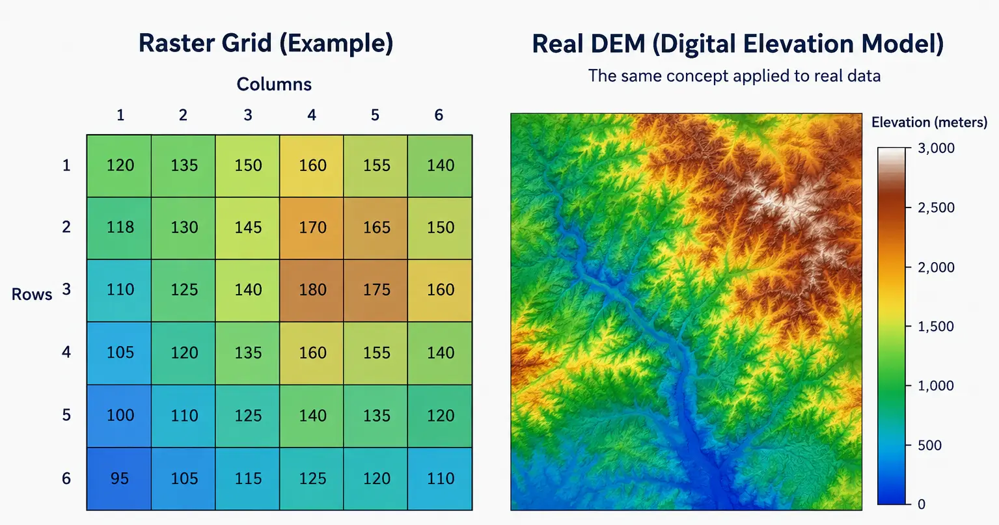
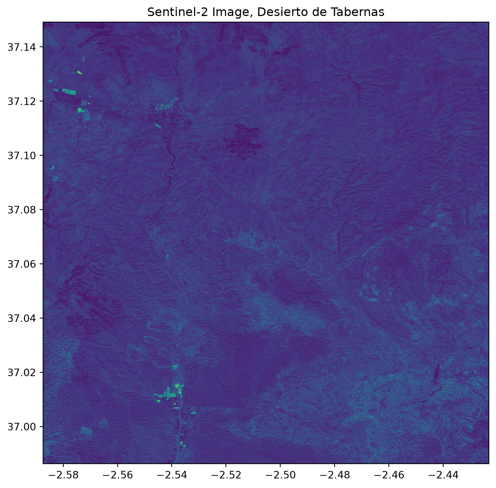
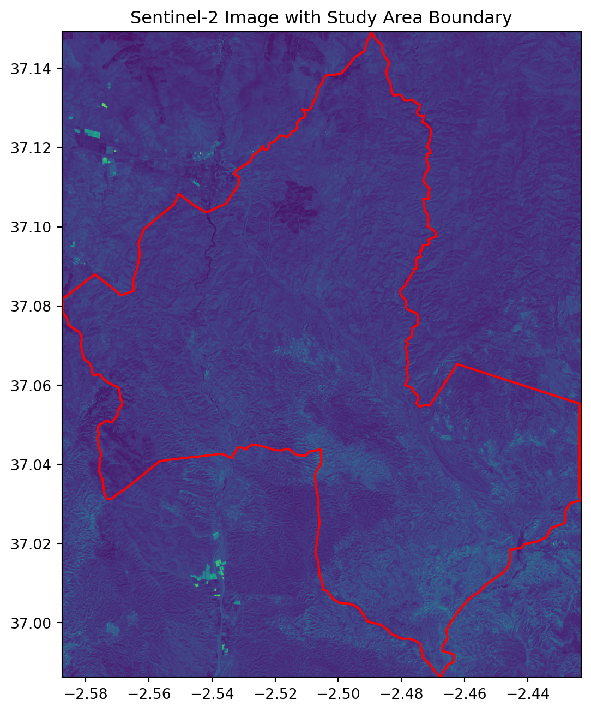
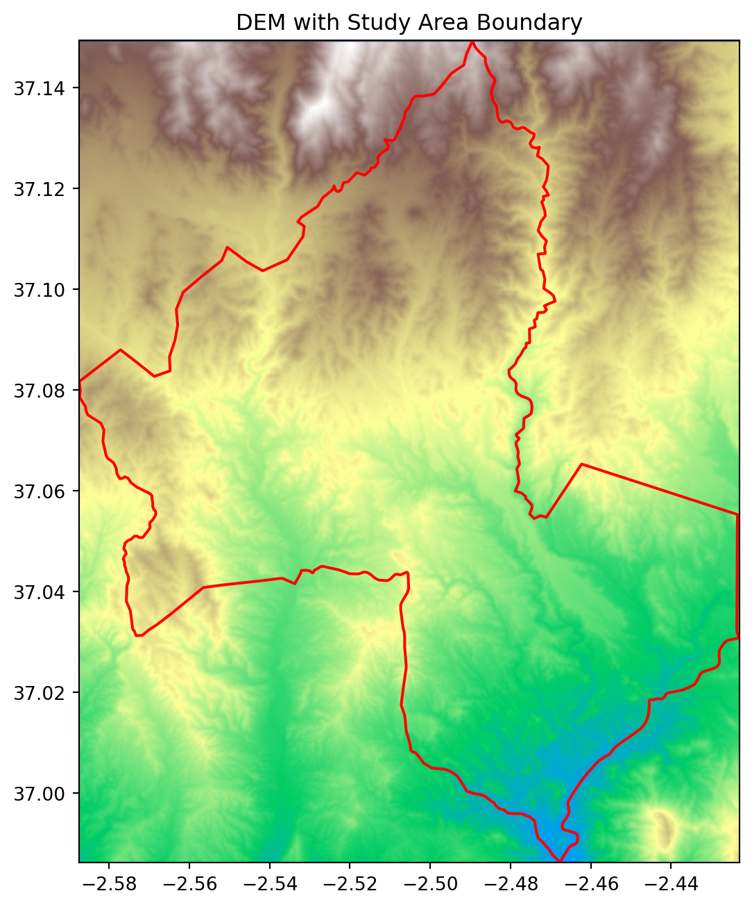

import rasterio
import matplotlib.pyplot as pltsession 01: working with raster data
Getting started with spatial data and rasterio
Introduction
Every spatial dataset you will encounter falls into one of two fundamental models: raster or vector. This session focuses entirely on the first. Raster data represents the world as a continuous grid of equally sized cells, called pixels, laid out in rows and columns. Each pixel holds one value, and that value can represent almost anything measured across space: elevation above sea level, reflected sunlight captured by a satellite sensor, air temperature, population density, or the probability that a given location is suitable for a solar installation. What makes a raster a raster is not what it measures, but how it is structured: a regular grid, sampled at a fixed interval known as the spatial resolution.

Image generated with GPT Image 2.5.
Spatial resolution is the single most important property of a raster to internalize early. A resolution of 30 meters means each pixel represents a 30 by 30 meter square on the ground; anything smaller than that square, any variation happening inside it, is invisible to the dataset and gets averaged or generalized into a single value. Choosing a resolution is always a trade-off between detail and file size: a 10 meter Sentinel-2 image of a whole province is already close to a gigabyte, while the same area at 30 meters would be a fraction of that size but far less able to distinguish small features, such as a narrow road or an individual building.
A raster is never just a grid of numbers. Every raster file also carries geographic metadata that ties that grid to a real location on Earth: a coordinate reference system (CRS), defining which projection and datum the coordinates use, and an affine transform, defining exactly how a pixel’s row and column position maps to a real-world coordinate. Without this metadata, a raster is just an image; with it, a raster becomes a georeferenced dataset that can be measured, compared, and combined with other spatial data. This is the deepest conceptual difference between a raster and an ordinary photograph: a photograph has pixels, but a raster has pixels that know exactly where they are. We will look closely at this metadata in Session 03; for now it is enough to know that it exists.
Rasters also differ in how many bands they carry. A DEM typically holds a single band, since elevation is a single measurement per location. A satellite image such as Sentinel-2 holds several bands stacked together, one per spectral wavelength range the sensor captures, such as red, green, blue, and near infrared. Each band is itself a full 2D grid at the same resolution and extent, so a multi-band raster can be thought of as a stack of aligned grids rather than a single one.
The Solar Suitability Project
Over the next ten sessions, we build a single project from start to finish: an application that identifies the most suitable locations for solar panel installation around the Desierto de Tabernas in Almeria. Each session adds one concrete piece, and by the final session everything is combined into an interactive web application. The analysis rests on four factors: slope and aspect, both derived from a Digital Elevation Model, land cover derived from a Sentinel-2 image, and accessibility to roads and power lines. Every raster and vector operation we learn in this course exists to eventually feed into that final suitability map.
This session is the starting point: getting our tools installed, understanding what raster data is, and taking our first real look at the data we will spend the rest of the course working with.
Setting Up the Project
Our project keeps raw data in a data/ folder, generated outputs in data/outputs/, and the processing logic for each session in its own file inside a modules/ folder. This session begins that structure with data_loader.py, the first module we build.
solar_suitability_project/
├── data/
│ ├── dem.tif
│ ├── sentinel.tif
│ ├── Desierto_de_Tabernas.gpkg
│ ├── road.gpkg
│ ├── power.gpkg
│ └── outputs/
├── modules/
│ └── data_loader.py
└── main.pyEvery library used in this course can be installed with pip. For this session, we only need three of them.
pip install rasterio geopandas matplotlib
Note
dem.tif and sentinel.tif are raster files. Desierto_de_Tabernas.gpkg is a vector boundary in the GeoPackage format, a single-file, SQLite-based container for vector layers. We use it only briefly in this session, to draw it over the raster. road.gpkg and power.gpkg are not used until session 02.
Import Libraries
rasterio is the core library for reading and writing raster data, built on top of GDAL, the standard low-level engine for geospatial data access. matplotlib is used for all visualization. We import both up front.
Reading and Displaying a Raster
A raster file is opened with rasterio.open(), which returns a dataset object giving access to both the pixel values and the geographic metadata attached to the file. We open files using a with block, which automatically closes the file once we are done with it, even if an error occurs inside the block. This is the same pattern used when reading plain text files in Python, and you should use it every time you open a raster in this course.
sentinel_path = "data/sentinel.tif"
with rasterio.open(sentinel_path) as src:
print("Number of bands:", src.count)
print("Width, height:", src.width, src.height)Number of bands: 4
Width, height: 1829 1814
Important
Anything you read inside the with block, such as pixel values, should be stored in a variable if you need it afterward. The dataset object itself, src, becomes unusable once the block ends and the file is closed.
rasterio.plot.show is a convenience function built specifically to display raster data correctly, plotting pixels at their true geographic coordinates using the file’s transform, rather than raw pixel indices. Passed a multi-band dataset directly, it automatically builds a simple color composite from the first three bands.
from rasterio.plot import show
with rasterio.open(sentinel_path) as src:
fig, ax = plt.subplots(figsize=(8, 8))
show(src, ax=ax)
ax.set_title("Sentinel-2 Image, Desierto de Tabernas")
plt.show()
Note
The colors in this first look are not necessarily a fully accurate natural color image, since we have not yet told rasterio which bands correspond to red, green, and blue, or corrected the brightness. We return to building a proper color composite in a later session. For now, this is enough to confirm the file opens correctly and to see the shape of our study area.
Overlaying the Study Boundary
We use geopandas to read the vector boundary of our study area. geopandas extends the familiar pandas DataFrame with a geometry column, allowing spatial data to be read and drawn with a simple, consistent syntax. We will study it properly in the next session; here we only need .read_file() and .plot().
import geopandas as gpd
boundary = gpd.read_file("data/Desierto_de_Tabernas.gpkg")
boundary.head()| osm_id | class | type | name | address | extratags | geometry | |
|---|---|---|---|---|---|---|---|
| 0 | 94746993 | leisure | nature_reserve | Tabernas Desert, Almeria, Andalusia, Spain | "nature_reserve"=>"Tabernas Desert","province"... | "website"=>"https://www.andalucia.com/environm... | MULTIPOLYGON (((-288026.292 4450495.845, -2879... |
Before drawing two spatial datasets together, we must confirm they share the same coordinate reference system. If they do not, the two layers are measured in different units or origins, and drawing them on the same axes places them in completely different, unrelated positions, which is exactly what causes the boundary to appear missing or wildly out of place. We cover CRS properly in Session 03; for now we only need .to_crs() to fix a mismatch when we find one.
with rasterio.open(sentinel_path) as src:
sentinel_crs = src.crs
print("Sentinel CRS:", sentinel_crs)
print("Boundary CRS:", boundary.crs)
print("Match:", sentinel_crs == boundary.crs)
if boundary.crs != sentinel_crs:
boundary = boundary.to_crs(sentinel_crs)Sentinel CRS: EPSG:4326
Boundary CRS: EPSG:3857
Match: Falsewith rasterio.open(sentinel_path) as src:
fig, ax = plt.subplots(figsize=(8, 8))
show(src, ax=ax)
boundary.boundary.plot(ax=ax, edgecolor="red", linewidth=1.5)
ax.set_title("Sentinel-2 Image with Study Area Boundary")
plt.show()
Important
boundary.to_crs(sentinel_crs) reprojects the boundary’s coordinates to match the raster, without changing the raster itself. Always reproject the vector layer to match the raster’s CRS, rather than the other way around, since reprojecting a raster is a more expensive resampling operation, while reprojecting a vector layer is a straightforward coordinate transformation.
Exercise: Open the DEM
Open data/dem.tif the same way we opened the Sentinel image, and display it with rasterio.plot.show using the colormap "terrain". Then draw the study area boundary on top of it, exactly as we did above.
Solution
dem_path = "data/dem.tif"
with rasterio.open(dem_path) as src:
dem_crs = src.crs
boundary_for_dem = boundary.to_crs(dem_crs) if boundary.crs != dem_crs else boundary
with rasterio.open(dem_path) as src:
fig, ax = plt.subplots(figsize=(8, 8))
show(src, ax=ax, cmap="terrain")
boundary_for_dem.boundary.plot(ax=ax, edgecolor="red", linewidth=1.5)
ax.set_title("DEM with Study Area Boundary")
plt.show()
Building data_loader.py
Every session in this course ends by adding to the project’s modules/ folder. This session, we wrap the two loading steps above into small, reusable functions, saved into modules/data_loader.py. Later sessions will simply import from this file instead of repeating these steps.
# modules/data_loader.py
import rasterio
import geopandas as gpd
def load_raster(path):
"""Open a raster file and return the dataset path for later use with rasterio.open()."""
with rasterio.open(path) as src:
print(f"Loaded raster: {path} ({src.width}x{src.height}, {src.count} band(s))")
return path
def load_boundary(path):
"""Load a vector boundary file as a GeoDataFrame."""
boundary = gpd.read_file(path)
print(f"Loaded boundary: {path} ({len(boundary)} feature(s))")
return boundary
Tip
Notice that load_raster does not return the pixel values themselves, only the confirmed file path. This mirrors how we will keep using rasterio throughout the course: opening a raster is cheap, but its data should only be read inside a with block, at the moment it is actually needed.
Summary
This session introduced the raster data model, set up our project structure and libraries, and took our first real look at the Sentinel-2 image and DEM we will use throughout the course, overlaying our study area boundary on top of the Sentinel image. We also started modules/data_loader.py, the first building block of our solar suitability project. Session 02 introduces vector data properly, working with the road and power line layers we have not yet touched.